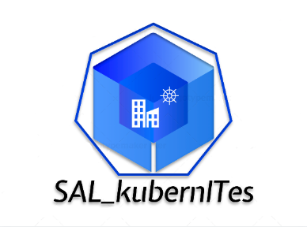
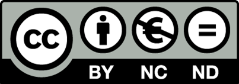

Esta obra está sujeta a una licencia de Reconocimiento-NoComercialSinObraDerivada 4.0 Internacional (CC BY-NC-ND 4.0)
Copyright © 2021 Saúl Altoubah León
Reservados todos los derechos. Está prohibido la reproducción total o parcial de esta obra por cualquier medio o procedimiento, comprendidos la impresión, la reprografía, el microfilme, el tratamiento informático o cualquier otro sistema, así como la distribución de ejemplares mediante alquiler y préstamo, sin la autorización escrita del autor o de los límites que autorice la Ley de Propiedad Intelectual.